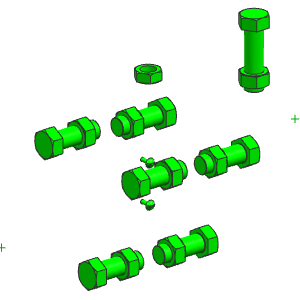
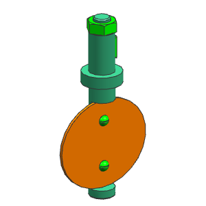

选装配→高级→脚本。
在脚本对话框中，点击定义脚本 。
在定义/执行脚本对话框中，在过滤器列表下，选择 LOAD ONLY FASTENERS。
选中脚本中的命令显示在脚本内容列表中。
点击执行。
紧固件-包括一个未被 INTERNAL_PARTS 组件集选中的螺母-被加载了，而其它部件被卸载了。

在过滤器列表下，选择 LOAD ONLY BRASS。
所有黄铜部件被加载而其它部件被卸载了。

关闭所有部件。